First time user experience
Shaping how new users get started
I helped define how new users get started after sign-up. I mapped the journey, built the logic that routes users to what they need, and designed the cards, banners, and states that guide them to activation.
- Role
- Product Designer, contributor
- Timeline
- 2024 to 2025
- Platforms
- App, web-mobile, dashboard
- Status
- Launched in 2024, second version in 2025
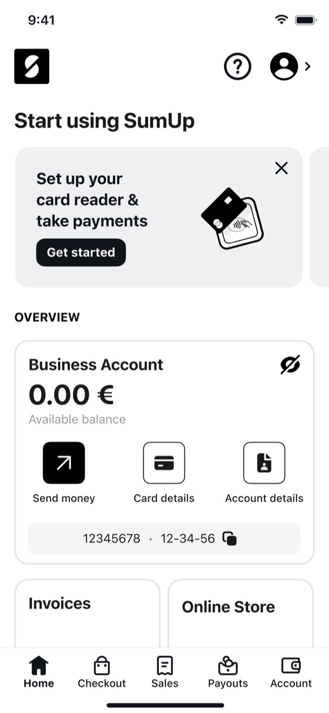
01. The problem
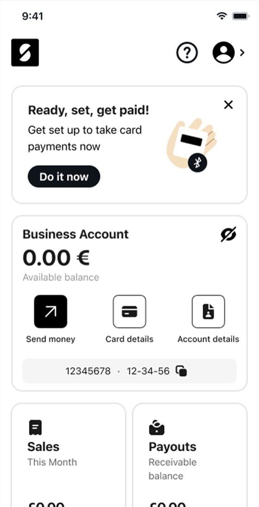
Little guidance
After signing up, new merchants landed on the app home screen with little guidance.
One banner for everyone
One generic banner was shown to everyone, whether they wanted to take payments with a card reader, with their phone, or open a business account.
Never asked
The product never asked what they came for.
02. What I did
I contributed across strategy, flow logic, MVP definition and UI.
Journey
Mapped the journey after registration for the dashboard and web-mobile.
Decision tree
Built a decision tree for all products: who the merchant groups are, which question to ask, and where each answer leads.
Scenarios
Mapped scenarios such as card reader only, phone only, all selected, skip, and edge cases.
Who sees what
Mapped who sees which card in the app MVP, based on each merchant’s status and readiness.
Tone
Took part in the brand voice workshop that set the tone for first-time content.
Interface
Designed the cards, banners and success states.
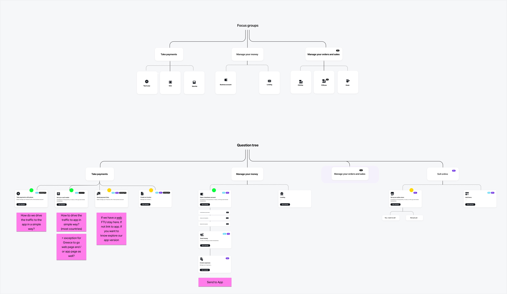
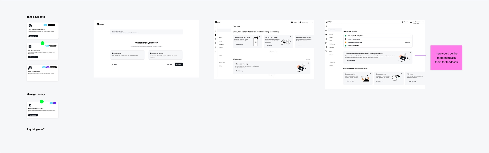
03. Key decisions
Ask first, then guide
Merchants are asked one question: what would you like to do? Their answer decides which setup card they see.
Cards on the home screen, not extra steps
Setup actions sit as cards on top of the home screen, so merchants are not held up by more onboarding steps. This keeps the cognitive load low.
Clear words, gentle success
We turned the brand voice into the card copy: plain language, no marketing or technical jargon, the merchant’s own words. Success messages celebrate quietly, like “You can now take card payments”.
Ask how it went
The success card asks “Was this easy to do?”, so the team can learn whether setup felt simple.
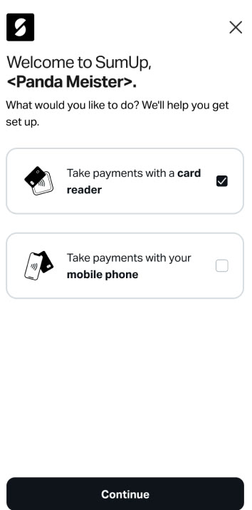
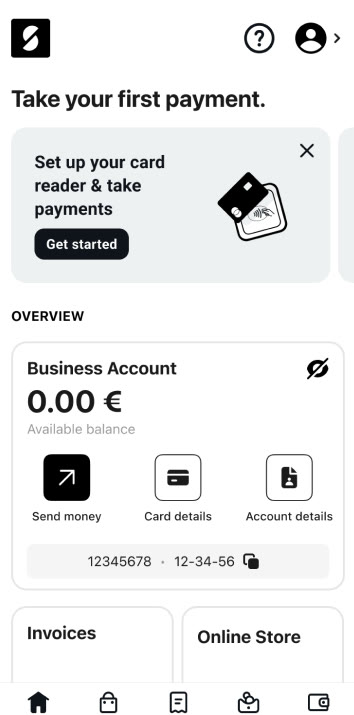
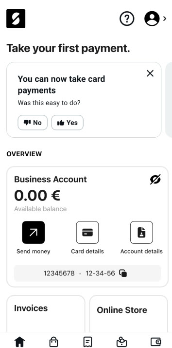
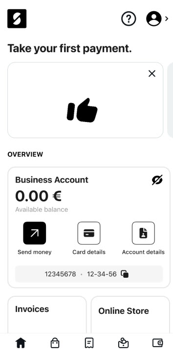
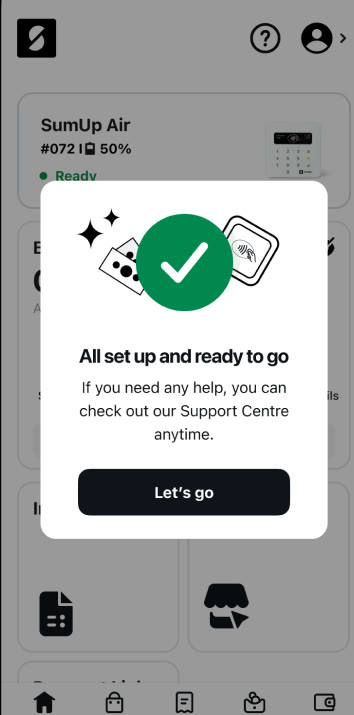
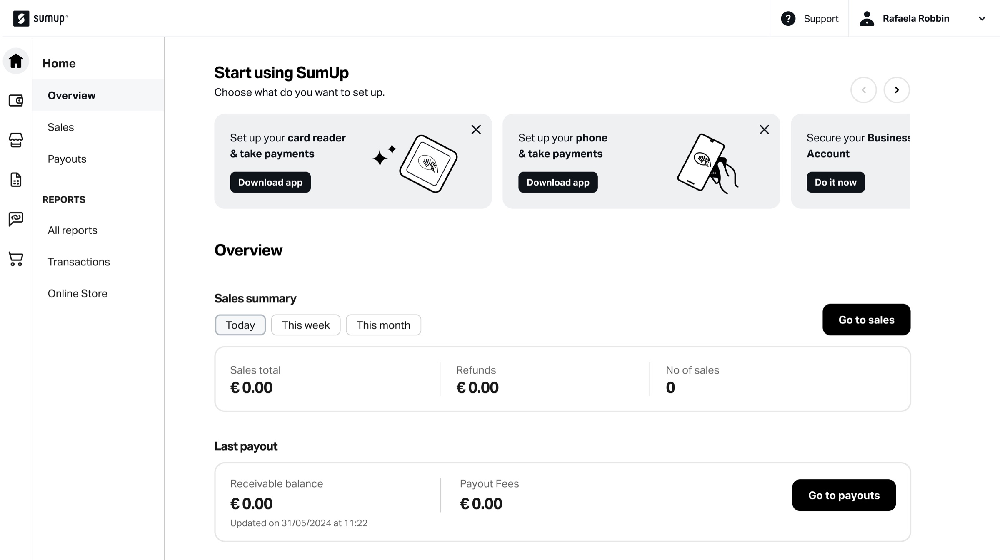
04. Validation and testing
My main focus was understanding the money flow and whether FTU improved how merchants moved from onboarding into activation.
Tested against the old banner
FTU ran as an experiment against the old banner. It rolled out on Android in August 2024 and on iOS in September 2024.
Intent was captured
Most merchants submitted a product need. The majority chose combinations of Business Account, Card Reader and Tap to Pay, instead of staying in an undefined state after registration.
Product-specific, not one size
More merchants set up and used Tap to Pay, while card reader use did not change in a meaningful way. The results made a strong case for product-specific activation rather than universal promotion.
What we learned
Logic as much as interface
Activation is as much about decision logic as it is about interface design. The experience worked better when the product first understood the merchant’s need, then responded with one focused action.
Continuity matters
Merchants who switched devices did not see FTU again. The fix shows it on each device until setup is done.
05. Second iteration, 2025
In 2025, FTU grew around the business account and helping merchants understand where their money goes.
Business objective
Enhance the SumUp app by promoting the adoption of multiple products, improving retention, and making onboarding smoother for new merchants across different entry points.
Hypothesis
More first-time guidance that explains the money flow helps merchants understand it and make their first transaction.
Key result
More merchants actively using their business account in their first 30 days, starting with their first bank transfer.
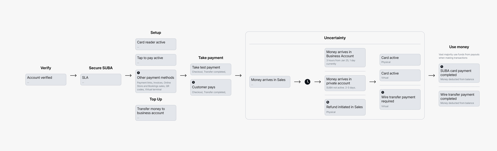
06. Outcome
The feature launched in 2024.
Merchants were guided to the product they came for, instead of one banner for everyone. The work then grew into a second version focused on the business account and understanding where your money goes, launched in 2025.
Want the details?
Selected work is presented in a redacted format to respect customer and company confidentiality. I’m happy to share further process, decisions, and artefacts during a conversation.
Let’s talk through it